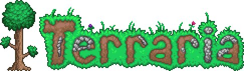

Terraria

Terraria — компьютерная игра в жанре приключенческой песочницы, разработанная американской студией Re-Logic. Была выпущена в 2011 году для компьютеров Microsoft Windows с распространением через систему цифровой дистрибуции Steam.Игра, разработанная с использованием набора инструментов Microsoft XNA, даёт в распоряжение игрока процедурно генерируемый и изменяемый двухмерный мир. Помимо добычи ресурсов и строительства сооружений, в игровом процессе Terraria также уделяется внимание исследованию мира, поиску сокровищ и сражениям с противниками.